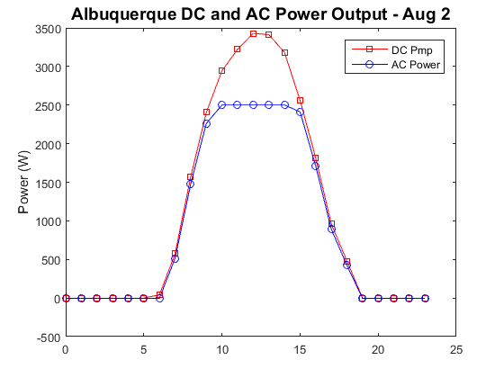

PVL_TestScript1
Example script to demonstrate the modeling of a PV system
This script demonstrates how to use the PV_Lib Toolbox to model the power output of a fixed-tilt photovoltaic array in Albuquerque, New Mexico, USA. The script uses irradiance and weather data that is read in from a Typical Meteorological Year 3 (TMY3) formatted file that contains one year of hourly-averaged data.
Contents
- PV_LIB Functions used in this example
- Step 0: Define PV System
- 0.1 Define the PV module
- 0.2 Define the Inverter
- 0.3 Define the Array configuration
- 0.4 Define Additional Array Parameters
- Step 1: Read in Irradiance and Weather
- 1.1 Define Time and Irradiance Variabiles
- 1.2 Define the Site Location
- 1.3 Calculate Sun Position
- 1.4 Calculate Air Mass
- Step 2: Calculate Incident Radiation
- 2.1 Calculate Solar Angle of Incidence
- 2.2 Calculate Beam Radiation Component on Array
- 2.3 Calculate SkyDiffuse Radiation Component on Array
- 2.4 Calculate Ground Reflected Radiation Component on Array
- Step 3 Shading and Soiling
- Step 4: Calculate Cell Temperature
- Step 5: Calculate Module/Array IV Performance
- Step 6: DC and Mismatch Losses
- Step 7: DC to DC Max Power Point Tracking
- Step 8: DC to AC Conversion
PV_LIB Functions used in this example
clear all; %clear memory before running script close all; %close all files and figures
Step 0: Define PV System
Before modeling can even begin, the PV system must be defined so that it can be properly represented by the model. This system we use for this example is outlined below:
- Location: Albuquerque, New Mexico USA
- Module: Candadian Solar CS5P-220M
- Inverter: PV Powered PVP2500
- # of Modules per String: 9
- # of Parallel strings: 2
- Array Tilt Angle: 35.04 degrees
- Array Azimuth Angle: 180 degrees*
*Azumuth angle convention is decimal degrees East of North. With North = 0 deg, East = 90 deg, South = 180 deg, and West = 270 deg.
0.1 Define the PV module
Define the PV module from the Sandia PV Module Database.
This step uses the PV_LIB function pvl_sapmmoduledb to extract a selected module from the excel version of the Sandia PV Module Database. The module selected is found on row 123 in that file.
ModuleParameters = pvl_sapmmoduledb(123,'SandiaModuleDatabase_20120925.xlsx')
ModuleParameters =
name: 'Canadian Solar CS5P-220M'
vintage: 2009
material: 'c-Si'
area: 1.7010
AlphaIsc: 3.9700e-04
AlphaImp: 1.8100e-04
Isc0: 5.0911
Imp0: 4.5463
Voc0: 59.2608
Vmp0: 48.3156
BetaVoc: -0.2170
BetaVmp: -0.2355
mBetaVoc: 0
mBetaVmp: 0
Ns: 96
Np: 1
delT: 3
fd: 1
n: 1.4032
Ix0: 4.9760
Ixx0: 3.1880
a_wind: -3.4064
b_wind: -0.0842
c: [1.0128 -0.0128 0.2793 -7.2446 0.9964 0.0036 1.1554 -0.1554]
a: [-6.9304e-05 0.0017 -0.0158 0.0681 0.9284]
b: [-1.3590e-09 2.1120e-07 -1.2460e-05 3.1030e-04 -0.0024 1]
0.2 Define the Inverter
Inverter database maintained by NREL System Advisor Model has been converted to a structure and saved in \Required Data folder. This .mat file can be generated from the latest SAM file using the function: pvl_SAMLibraryReader_SNLInverters.m.
load('SandiaInverterDatabaseSAM2014.1.14.mat') % PV Powered PVP2500 inverter is #793 in the InverterNames cell array Inverter = SNLInverterDB(793) clear InverterNames SNLInverterDB
Inverter =
name: {'PV Powered: PVP2500 240V [CEC 2006]'}
Vac: 240
Pac0: 2500
Pdc0: 2.6301e+03
Vdc0: 219.2317
Ps0: 41.3618
C0: -1.2650e-05
C1: 6.6747e-05
C2: 0.0017
C3: 6.1375e-04
Pnt: 3.9000
Vdcmax: 500
Idcmax: 20
MPPTLow: 140
MPPTHi: 450
LibraryType: {'SandiaInverter'}
LibraryName: {'Sandia Inverters'}
0.3 Define the Array configuration
Array.Tilt = 23; % Array tilt angle (deg) Array.Azimuth = 180; %Array azimuth (180 deg indicates array faces South) Array.Ms = 9; %Number of modules in series Array.Mp = 2; %Number of paralell strings
0.4 Define Additional Array Parameters
Because we will be using the module temperature model from the Sandia Photovoltaic Array Performance Model (SAPM), we will define the necessary parameters a and b here.
Array.a = -3.56; Array.b = -0.075;
Step 1: Read in Irradiance and Weather
Read in weather data from Albuquerque TMY3 file: 723650TY.csv. This step uses the PV_LIB function pvl_readtmy3 to read in data from this TMY3 formatted file.
TMYData = pvl_readtmy3('723650TY.csv');
1.1 Define Time and Irradiance Variabiles
- Create time structure (Time) by using the PV_LIB function pvl_maketimestruct.
- Define variables for direct normal irradiance (DNI), diffuse horizontal irradiance (DHI), and global horizontal irradiance (GHI)
TimeMatlab = TMYData.DateNumber; Time = pvl_maketimestruct(TimeMatlab, ones(size(TimeMatlab))*TMYData.SiteTimeZone); DNI = TMYData.DNI; DHI = TMYData.DHI; GHI = TMYData.GHI;
Let's examine irradiance for a sample day (August 2)
figure tfilter = and(Time.month == 8,Time.day == 2); plot(Time.hour(tfilter),DNI(tfilter),'-*') hold all plot(Time.hour(tfilter),DHI(tfilter),'-o') plot(Time.hour(tfilter),GHI(tfilter),'-x') legend('DNI','DHI','GHI') xlabel('Hour of Day') ylabel('Irradiance (W/m^2)') title('Albuquerque TMY3 - Aug 2','FontSize',14)
1.2 Define the Site Location
Create a Location structure using the PV_LIB function pvl_makelocationstruct.
Location = pvl_makelocationstruct(TMYData.SiteLatitude,TMYData.SiteLongitude,TMYData.SiteElevation) %Altitude is optional
Location =
latitude: 35.0400
longitude: -106.6200
altitude: 1619
1.3 Calculate Sun Position
Calculate sun position using PV_LIB function pvl_ephemeris. If Pressure and Temperature are specified they must be in units of Pa and deg C, respectively.
PresPa = TMYData.Pressure*100; %Convert pressure from mbar to Pa
[SunAz, SunEl, AppSunEl, SolarTime] = pvl_ephemeris(Time,Location,PresPa,TMYData.DryBulb);
Let's examine a plot of sun position for our site on August 2
figure tfilter = and(Time.month == 8,Time.day == 2); plot(Time.hour(tfilter),90-AppSunEl(tfilter),'-s') hold all plot(Time.hour(tfilter),SunAz(tfilter),'-o') legend('Zenith angle','Azimuth Angle') xlabel('Hour of Day') ylabel('Angle (deg)') title('Albuquerque Sun Position - Aug 2','FontSize',14)
1.4 Calculate Air Mass
Air mass represents the optical path length of the sun through the Earth's atmosphere. It is primarily a function of the zenith angle but also varies with surface elevation and atmospheric pressure. It is calculated using the PV_LIB finctions pvl_absoluteairmass and pvl_relativeairmass.
AMa = pvl_absoluteairmass(pvl_relativeairmass(90-AppSunEl),PresPa);
Step 2: Calculate Incident Radiation
This step includes accounting for so
2.1 Calculate Solar Angle of Incidence
This step calculates the angle between direct beam from the sun to the array surface using the PV_LIB function pvl_getaoi.
AOI = pvl_getaoi(Array.Tilt, Array.Azimuth, 90-AppSunEl, SunAz);
Let's examine a plot of sun angle of incidence on the array on August 2
figure tfilter = and(Time.month == 8,Time.day == 2); plot(Time.hour(tfilter),AOI(tfilter),'-s') legend('AOI','Location','SE') xlabel('Hour of Day') ylabel('Angle (deg)') title('Albuquerque Angle of Incidence - Aug 2','FontSize',14)
2.2 Calculate Beam Radiation Component on Array
The beam component of the irradiance, Eb is simply:
Eb = 0*AOI; %Initiallize variable Eb(AOI<90) = DNI(AOI<90).*cosd(AOI(AOI<90)); %Only calculate when sun is in view of the plane of array
2.3 Calculate SkyDiffuse Radiation Component on Array
There are many models that have been developed to estimate the amount of diffuse radiation that reaches a tlited plane from the sky EdiffSky. The PV_LIB Toolbox provides several of the more popular ones to choose from. They are listed below.
We will use pvl_kingdiffuse for this example.
EdiffSky = pvl_kingdiffuse(Array.Tilt,DHI, GHI, 90-AppSunEl);
2.4 Calculate Ground Reflected Radiation Component on Array
If the array is tilted there will be a small amount of diffuse radiation reflecting off the ground surfaxce and hitting the plane of the array EdiffGround. We calculate this component using the PV_LIB function pvl_grounddiffuse. The ground reflectance or albedo is an input to this function. A good source of albedo values can be found in ...(add link to web).
Albedo = 0.2; EdiffGround = pvl_grounddiffuse(Array.Tilt,GHI, Albedo); E = Eb + EdiffSky + EdiffGround; % Total incident irradiance (W/m^2) Ediff = EdiffSky + EdiffGround; % Total diffuse incident irradiance (W/m^2)
The total diffuse radiation reaching the array is calculated as the sum of the sky diffuse and the ground diffuse components. The total Plane of Array (POA) irradiance is the sum of Eb + EdiffSky + EdiffGround.
The following plot shows all of these components of August 2.
figure tfilter = and(Time.month == 8,Time.day == 2); plot(Time.hour(tfilter),Eb(tfilter),'-s') hold all plot(Time.hour(tfilter),EdiffSky(tfilter),'-o') plot(Time.hour(tfilter),EdiffGround(tfilter),'-x') legend('Eb','EdiffSky','EdiffGround') xlabel('Hour of Day') ylabel('Irradiance (W/m^2') title('Albuquerque POA Irradiance Components - Aug 2','FontSize',14)
Step 3 Shading and Soiling
Soiling reduces the amount of light reaching the array. For this example we will assume that soling levels are 2%
SF=0.98;
Step 4: Calculate Cell Temperature
Cell temperature is calculated using the PV_LIB function: pvl_sapmcelltemp, which is based on a method developed by King et al., 2004 (Eqs. 11 & 12).
E0 = 1000; %Reference irradiance (1000 W/m^2)
celltemp = pvl_sapmcelltemp(E, E0, Array.a, Array.b, TMYData.Wspd, TMYData.DryBulb, ModuleParameters.delT);
Step 5: Calculate Module/Array IV Performance
For this example we use the Sandia PV Array Performance Model to represent the IV performance of the array at each time step. We can apply this model using the PV_LIB function: pvl_sapm. This function requires that we define the "effective irradiance" Ee as defined by King et al., 2004 in Eq. 7. Ee is esentially the POA irradiance corrected for spectral mismatch losses (F1) and angle of incidence losses (F2). The F1 and F2 functions are defined as 5th and 6th degree polynomials, respectively.
The output of this step is the IV characteristics of the array at each time step. The Sandia PV Array Performance Model used here only provides five points on the IV curve (Isc, Ix, Imp, Ixx, and Voc).

F1 = max(0,polyval(ModuleParameters.a,AMa)); %Spectral loss function F2 = max(0,polyval(ModuleParameters.b,AOI)); % Angle of incidence loss function Ee = F1.*((Eb.*F2+ModuleParameters.fd.*Ediff)/E0)*SF; %Effective irradiance Ee(isnan(Ee))=0; % Set any NaNs to zero mSAPMResults = pvl_sapm(ModuleParameters, Ee, celltemp); aSAPMResults.Vmp = Array.Ms *mSAPMResults.Vmp; aSAPMResults.Imp = Array.Mp *mSAPMResults.Imp; aSAPMResults.Pmp = aSAPMResults.Vmp .* aSAPMResults.Imp;
The following plot shows the PV DC output predicted for the system on August 2.
figure('OuterPosition',[100 100 600 800]) tfilter = and(Time.month == 8,Time.day == 2); subplot(3,1,1) plot(Time.hour(tfilter),aSAPMResults.Pmp(tfilter),'-sr') legend('Pmp') %xlabel('Hour of Day') ylabel('DC Power (W)') title('Albuquerque DC Array Output - Aug 2','FontSize',14) subplot(3,1,2) plot(Time.hour(tfilter),aSAPMResults.Imp(tfilter),'-ob') legend('Imp') %xlabel('Hour of Day') ylabel('DC Current (A)') %title('Albuquerque Vmp and Imp - Aug 2','FontSize',12) subplot(3,1,3) plot(Time.hour(tfilter),aSAPMResults.Vmp(tfilter),'-xg') legend('Vmp') xlabel('Hour of Day') ylabel('DC Volatage (V)') %title('Albuquerque Vmp and Imp - Aug 2','FontSize',12)
Step 6: DC and Mismatch Losses
In this step any losses between the PV array and the max power point tracker are included. In the present small system example, we will assume that these losses are neglegible. If you want to include such losses (e.g., wireing losses), you would have to module each DC circuit separately and adjust the current values.
Step 7: DC to DC Max Power Point Tracking
In this step of the process the functionality of the maximum power point tracking (MPPT) is simulated. In most cases standard arrays, it is assumed that the inverter (with MPPT capability) is able to perfectly track the max power point (MPP) and thus there is no calculation required other than to calculate Pmp as was done in Step 5 above.
Step 8: DC to AC Conversion
This step acconts for the power conversion of the inverter and results in the AC power of the PV system. In this example we use the Sandia Performance Model for Grid-Connected Photovoltaic Inverters (King et al. 2007), which is implemented in the PV_LIB function: pvl_snlinverter.
ACPower = pvl_snlinverter(Inverter, mSAPMResults.Vmp*Array.Ms, mSAPMResults.Pmp*Array.Ms*Array.Mp);
The following plot compares the DC and AC power outputs predicted for the system on August 2.
figure tfilter = and(Time.month == 8,Time.day == 2); plot(Time.hour(tfilter),aSAPMResults.Pmp(tfilter),'-sr') hold all plot(Time.hour(tfilter),ACPower(tfilter),'-ob') legend('DC Pmp', 'AC Power') %xlabel('Hour of Day') ylabel('Power (W)') title('Albuquerque DC and AC Power Output - Aug 2','FontSize',14)
Note that the inverter is undersized compared with the DC array and thus the inverter "clips" the AC power.
Copyright 2014 Sandia National Laboratories